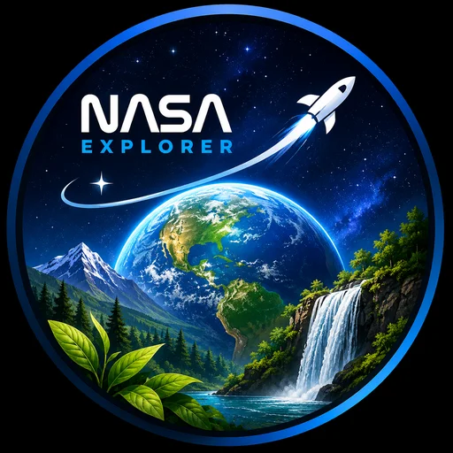

Daily Observation feed
🌌 Astronomy Picture of the Day
Every 24 hours, NASA engineers and astrophysicists select a breathtaking snapshot of the cosmos. Load HD coordinates below.

Initializing telemetries...
Connecting to NASA telemetry services...|
Telemetry Signals Captured
Scientific Data Pipelines
Active Space Feeds
Spectral Resolution
Every 24 hours, NASA engineers and astrophysicists select a breathtaking snapshot of the cosmos. Load HD coordinates below.
Input date parameters to pull historic APOD photography feeds directly from NASA's digital catalogs.
Explore physical landscape images of the red planet captured by NASA's Curiosity rover, categorized by camera and solar days (Sols).
SYSTEM READY. CHOOSE SOL COORDINATES & INITIATE SCAN.
View real-time, color-accurate images of our planet from the DSCOVR satellite, and explore active global wildfire and storm activities from NASA EONET.

Active global weather anomalies, volcanic activity, and wildfires tracked by Earth observation networks:
Live coordinates and status metrics for spacecraft orbits, upcoming launch logs, active asteroid paths, and solar space weather events.
Predict visible planetary alignments at your exact coordinates tonight, monitor lunar cycles, and map key upcoming astronomical events.
Analyze the clarity and coordinate alignment of space structures from your surface location:
Peak shooting star counts reaching up to 100 meteors per hour under optimal moonless sky conditions.
Mercury, Mars, Jupiter, Uranus, Neptune, and Saturn align in the morning sky in a 30-degree arc.
A spectacular "Ring of Fire" solar eclipse tracking across portions of the Western Hemisphere.
An interactive timeline spanning the achievements of international space flight, from lunar landings to deep space spectroscopy.
Our high-fidelity system feeds from official agency API telemetry endpoints. Discover the deep space features cataloged below.
Uplink files from the NASA Astronomy Picture of the Day library, updated every 24 hours.
Track hazardous Near Earth Objects (NEOs) passing through our local planetary corridor.
Monitor real-time geomagnetic storm parameters, sunspot counts, and aurora indicators.